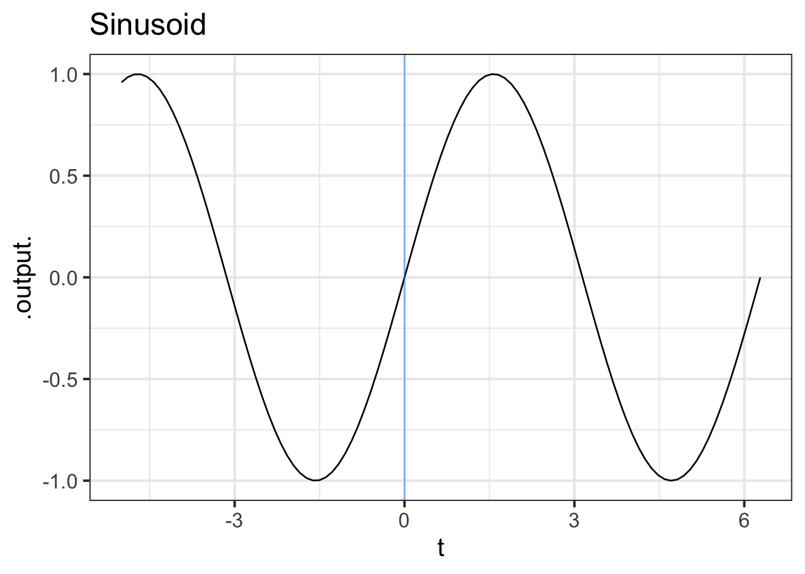
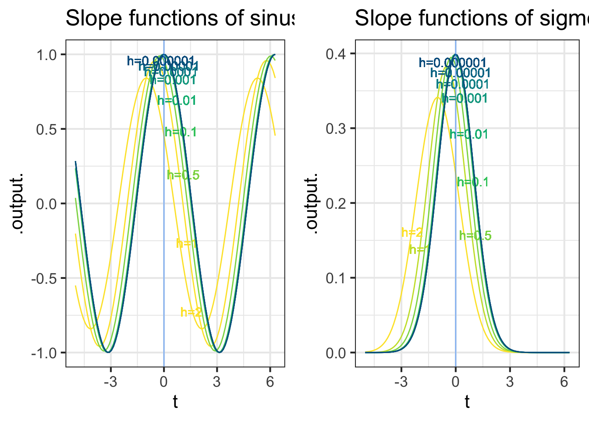
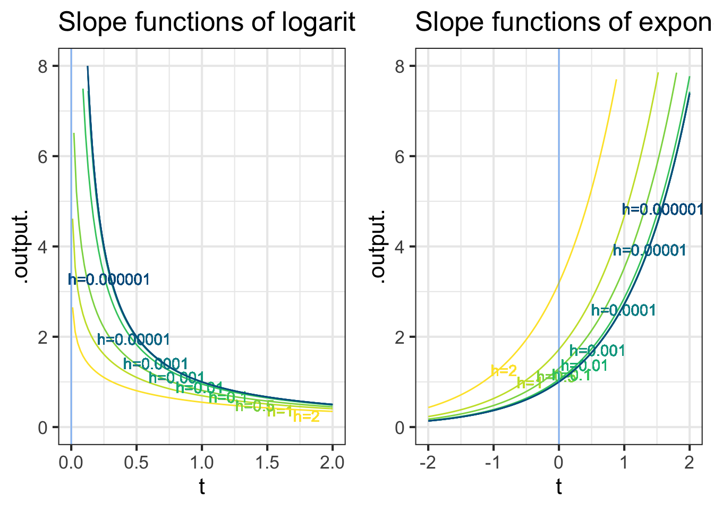

Dsin <- makeFun(( sin(t+h) - sin(t))/h ~ t, h=0.1)
Dsigma <- makeFun((pnorm(t+h) - pnorm(t))/h ~ t, h=0.1)19 Evanescent h
Recall that the local rate of change of a function can be written as a ratio of rise-over-run: \[\partial_t f(t) \equiv \frac{f(t+h) - f(t)}{h}\] where \(h\) is the length of the “run.” The idea of the instantaneous rate of change is to make \(h\) as small as possible.
In the very early days of calculus, the vanishing \(h\) was described as “evanescent.” (Dictionary definition: “tending to vanish like vapor.”1) Another good image of \(h\) becoming as small as possible comes from the same University of Oxford mathematician whose poem The Jabberwocky we introduced in ?sec-fun-notation. In Alice in Wonderland, Dodgson introduced the character of the Cheshire Cat.


Start our story with two of the basic modeling functions that, like the characters from Alice in Wonderland, have considerable “personality”: the sinusoid (sin()) and the sigmoid (pnorm()).
The computer can easily construct the slope functions for the sinusoid and sigmoid, which we’ll call Dsin() and Dsigma() respectively.

In the tilde expression handed to makeFun(), we’ve identified t as the name of the input and given a “small” default value to the h parameter. But R recognizes that both Dsin() and Dsigma() are functions with two inputs, t and h, as you can see in the parenthesized argument list for the functions.
Dsin
## function (t, h = 0.1)
## (sin(t + h) - sin(t))/h
Dsigma
## function (t, h = 0.1)
## (pnorm(t + h) - pnorm(t))/hThis is a nuisance, since when using the slope functions we will always need to think about h, a number that we’d like to describe simply as “small,” but for which we always need to provide a numerical value. A surprisingly important question in the development of calculus is, “What can we do to avoid this nuisance?” To find out, let’s look at Dsin() and Dsigma() for a range of values of h, as in Figure 19.4.

Some observations from this numerical experiment:
As \(h\) gets very small, the slope function doesn’t depend on the exact value of \(h\). As you can see in Figure 19.4, the graphs of the functions with the smallest \(h\) (blue), with labels near the top of the graph) lie on top of one another.
This will provide a way for us, eventually, to discard \(h\) so that the slope function will not need an \(h\) argument.
For small \(h\), we have \(\partial_t \sin(t) = \sin(t + \pi/2) = \cos(t)\). That is, taking the slope function of a sinusoid gives another sinusoid, shifted left by \(\pi/2\) from the original. Or, in plain words, for small \(h\) the cosine is the slope function of the sine.
For small \(h\), we have \(\partial_t \pnorm(t) = \dnorm(t)\). That is, for small \(h\) the gaussian function is the slope function of the sigmoid \(\dnorm()\) function.
You can confirm these last two statements by comparison with the original functions, especially the alignment of the peaks of the slope functions with respect to the peak of the sinusoid and the half-way point of the sigmoid.
Here you use \(t\) as the name of the input and \(\partial_t\) as the notation for differentiation. Previously in this block you used \(x\) as the input name and \(\partial_x\) for differentiation. Are they the same?
Mathematically, the name of the input makes no difference whatsoever. We could call it \(x\) or \(t\) or \(y\) or Josephina. What’s important is that the name be used consistently on the left and right sides of \(\equiv\), and that the derivative symbol \(\partial\) has a subscript that identifies the with-respect-to input. All these are the same statement mathematically:
\[\partial_x\, x = 1\ \ \ \ \partial_t\, t = 1\ \ \ \ \partial_y\, y = 1\ \ \ \ \partial_\text{Josephina} \text{Josephina} = 1\] Admittedly, the last one is hard to read.
When we look at derivatives of functions with multiple inputs we will need to be thoughtful about our choice of the with-respect-to input. But we want you to get used to seeing different input names used for differentiation.
Now consider the slope functions of the logarithm and exponential functions.

These numerical experiments with the logarithm and exponential functions are more evidence that, as \(h\) gets small, the slope function doesn’t depend strongly on \(h\). And, we find that:
- For small \(h\), the slope function of the logarithm is a power-law function: \(\partial_t \ln(t) = \frac{1}{t}\).
- For small \(h\), the slope function of the exponential is the exponential itself: \(\partial_t e^x = e^x\).
You can confirm these by evaluating the slope function of the exponential at \(t=0\) and \(t=1\), and the slope function of the logarithm at \(t= 2, 1, 1/2, 1/4, 1/8.\)
“Small” and “zero,” although related, are different. In constructing a derivative, we use smaller and smaller \(h\), but never zero. Let’s see what happens if instead of evanescent h, we use zero h. For example, we can use the slope function Dsin() and Dsigma() that we created earlier. Setting \(h\) to zero does not give a result that is the instantaneous rate of change of anything:
Dsin(t=1, h=0)
## [1] NaN
Dsigma(t=0, h=0)
## [1] NaNIn NaN, you can hear the echo of your fourth-grade teacher reminding you that it is illegal to divide by zero.
Think of evanescent \(h\) as the vapor in the definition of “evanescent”: “tending to vanish like vapor.” This vapor is like the solvent in paint. You don’t want the solvent once the paint is on the wall; wet paint is a nuisance. But getting the paint from the container to the wall absolutely needs the solvent.
We used the solvent \(h\) earlier in the chapter in the numerical experiments that led us to the derivatives of the pattern-book functions, for instance \(\partial_x e^x = e^x\) or \(\partial_x \sin(x) = \cos(x)\). Eventually, we’ll construct an \(h\)-free theory of differentiation, reducing the process to a set of algebraic rules in which \(h\) never appears. With this as our goal, let’s continue using \(h\) for a while to find some additional useful facts about derivatives.